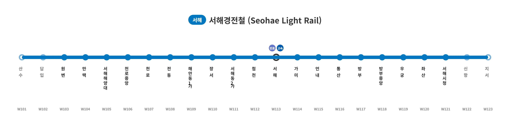

|
|||
|
 서해경전철 1단계 노선도 (예정)
|
|||
| 노선 정보 | |||
|---|---|---|---|
| 노선 색상 | ■ 히나 블루 (#55DDEE) | ||
| 운영 기관 | 서해도시철도공사 (설립 예정) | ||
| 상태 | 계획 확정 (실시 설계 중) | ||
| 개통 예정 | 2034년 11월 2032년 상반기 조기 개통 확정 | ||
| 기점 | 답입역 (2단계) | ||
| 종점 | 지서역 (2단계) | ||
| 역 수 | 19개 (1단계 16개) | ||
| 거리 | 약 21.5km (1단계) | ||
| 시스템 | K-AGT 무인운전 고무차륜 (전 구간 지상 고가) | ||
| 차량기지 | 미정 (상포동 일대 예정) | ||
"복잡한 리아스식 해안선 위를 통쾌하게 날아서 관통하다"
"도로 마비 5분 전, 서해시의 마지막 구원줄이자 숨통을 틔워줄 혈관"
"옆 동네 천주시 공무원들을 단체 멘붕에 빠뜨린 완전 룽♪한 재능충 노선"
서해시 서북쪽 끝자락인 원변읍의 대규모 산업/주거단지부터 시작해, 구도심(천로동, 해안동), KTX 고속철도가 정차하는 광역 허브 서해역, 그리고 신도심의 심장부인 서해시청을 일직선으로 완벽하게 관통하는 도시철도(경전철) 노선이다. 비좁은 도로와 험난한 지형을 피하기 위해 전 구간이 고가철도(지상 2~3층 높이)로 웅장하게 건설될 예정이다.
보통 인구 43만 명 규모의 중소 도농복합시에서 독자적으로 도시철도를 뚫겠다고 하면 당장 "미쳤냐, 지자체 파산할 일 있냐, 명백한 세금 낭비다"라는 거센 비판과 예타 탈락의 고배부터 마시는 것이 일반적이다. 실제로 사업 초기에는 중앙정부는 물론 시의회 내부에서도 그런 비관적인 회의론이 지배적이었다.
그러나 서해시 특유의 도로망 붕괴 직전의 막장스러운 교통 상황이 객관적인 데이터로 수면 위로 드러나고, 엎친 데 덮친 격으로 일부 보수 정치인들의 "차 막히면 자가용 끌고 다녀라"는 거대한 입방정(...) 망언이 터지며 여론이 180도 급반전했다. 결국 시민들의 압도적이고 폭발적인 지지(와 분노) 하에 중앙정부를 들이받아 2032년 조기 개통까지 단숨에 확정 짓는 기염을 토했다.
최근 노선 테마 색상이 확정되었는데, 하필이면 그 색상이 서브컬처 미디어 믹스 뱅드림!의 천재 아이돌 캐릭터 히카와 히나의 상징색인 #55DDEE (히나 블루)와 완벽히 겹쳐버렸다. 이 탓에 예비타당성 조사에서 수년째 피 터지게 구르며 고통받던 인구 52만의 옆 동네 천주시 공무원들과 시민들에게 본의 아니게 엄청난 스플래시 대미지(상대적 박탈감)를 입히고 있다.
당초 서해시는 시 재정을 고려하여 2034년 하반기 개통을 목표로 느긋하게 타당성 조사를 준비하고 있었다. 그러나 갑자기 발등에 불이 떨어져 2032년 상반기 조기 개통으로 목표를 무리하게 급수정하고 정부를 강하게 압박한 데에는 소름 돋는 현실적인 이유가 있다. 진짜로 지금 당장 짓지 않으면 서해시 전체의 도시 물류와 출퇴근망이 물리적으로 폭발하여 마비되기 때문이다.
기존 구도심(천로동)에서 신도심(서해시청)이나 대학가(국립서해해양대학교)로 이동하는 불쌍한 학생과 직장인들은, 매일같이 꽉 막힌 지옥의 해안도로에서 매연을 마시며 만원 버스에 갇혀 1시간씩 아까운 젊음을 낭비해야 했다. 눈앞 저 건너편에 뻔히 목적지가 보이는데 도로가 해안선을 따라 ∩자로 크게 돌아가니 매일 아침 복장이 터질 노릇이었다.
하지만 바다 위와 절벽 구간을 교각(다리)으로 직결해서 허공을 가로지르는 서해경전철이 개통되면 이야기가 180도 달라진다. 기존에 버스로 1시간 걸리던 거리를 단 15~20분 만에 에어컨 빵빵하게 쐬며 논스톱으로 주파할 수 있게 된다. 이는 단순한 교통수단 하나가 생기는 것을 넘어, 교통 마비로 벼랑 끝에 몰린 서해시의 끊어진 혈관을 기적적으로 이어주는 심장 대동맥 이식 수술과 다름없다.
도저히 지상 도로를 뜯어고치거나 지하를 뚫을 수 없는 악랄한 지형적 한계에 맞게, 전 구간 고가(Elevated) 철도 위를 달리는 최첨단 무인운전 시스템이 채택되었다.
| 단계 | 역번호 | 역명 | 승강장 | 환승 노선 | 소재지 |
|---|---|---|---|---|---|
| ❷ | W101 | 답 입 | 원변읍 | ||
| ❶ | W102 | 원 변 | ■││■ (지상 2층) | 원변읍 | |
| W103 | 만 택 | ■││■ (지상 3층) | |||
| W104 | 서해해양대 | ■││■ (지상 2층) | 천로동 | ||
| W105 | 천로중앙 | ■││■ (지상 2층) | |||
| W106 | 천 로 | ■││■ (지상 3층) | |||
| W107 | 전 동 | ■││■ (지상 2층) | 해안동 | ||
| W108 | 해안동1가 | ■││■ (지상 2층) | |||
| W109 | 장 서 | ■││■ (지상 3층) | 서해동 | ||
| W110 | 서해동2가 | ■││■ (지상 2층) | |||
| W111 | 서 해 | ■││■ (지상 3층) | 빈효 고속 | 서앙동 | |
| W112 | 가 미 | ■││■ (지상 2층) | 통마동 | ||
| W113 | 통 산 | ■││■ (지상 2층) | |||
| W114 | 방 부 | ■││■ (지상 2층) | 방부동 | ||
| W115 | 서해시청 | ■││■ (지상 2층) | |||
| W116 | 우 궁 | ■││■ (지상 2층) | 우궁동 | ||
| W117 | 좌 산 | ■││■ (지상 3층) | 좌산동 | ||
| ❷ | W118 | 신 항 | 신항동 | ||
| W119 |
지 서 인구는 적으나 차량기지 건설 및 인근 택지지구 개발 예정 | 상포동 |
초기 서해경전철 논의 당시, 재정 적자를 우려한 보수 성향의 일부 서해시의원들이 "인구 40만 촌구석 도시에 무슨 놈의 전철이냐, 심각한 세금 낭비다, 버스나 몇 대 더 늘려라"라며 사업을 극렬히 반대했다. 여기까지는 지자체 예산을 감시해야 하는 의원으로서 일반적인 정치적 반대 의견일 수 있었으나, 시의회 본회의장에서 한 의원이 선을 거하게 넘으며 "아니, 길 막히면 알아서 일찍 나오거나 자가용 끌고 다니면 되지 않느냐? 요새 웬만하면 집에 차 한 대씩은 다 있지 않느냐"는 역대급 마리 앙투아네트 급의 멍청한 망언을 터뜨려버렸다.
매일같이 매연 뿜는 덤프트럭들 사이에서 시내버스 손잡이를 부여잡고 목숨 건 곡예 비행을 하던 서민들과 대학생들은 이 싹수노란 발언에 말 그대로 대폭발했다. 분노한 시민들은 해당 정치인들을 옆 동네 효빈시의 전설적인 교통 파괴 주범인 윤대환에 비견하며 맹비난을 퍼부었다. "서해시판 윤대환이 나타났다", "네가 트럭이랑 박치기해 볼래?"라는 살벌한 현수막이 시내 교차로 곳곳에 걸렸고, 해당 의원들은 지역구 행사장에서 계란을 맞을 뻔한 사태까지 벌어지며 경찰의 보호를 받고 도망쳐야 했다.
결국 이 입방정 스노우볼 하나로 서해시에서 보수 진영의 지지율은 산산조각 났고, 선거에서 참패하며 서해시가 완벽한 진보/민주당의 철옹성 텃밭으로 완전히 굳어지는 결정적인 계기가 되었다. 주둥이 조심 한 번 못해서 자기 지역구 뱃지와 소속 정당의 뿌리까지 통째로 뽑아버린 기적의 사나이.
서해경전철의 최종 노선 색상이 발표되자 서브컬처 커뮤니티는 그야말로 뒤집어졌다. 공식 발표된 컬러 코드가 #55DDEE로, 공교롭게도 일본의 밴드물 미디어 믹스 프로젝트 뱅드림!의 밴드 Pastel*Palettes 소속 기타리스트이자 시리즈 최고의 미친 천재 캐릭터인 히카와 히나의 공식 이미지 컬러 헥사코드와 단 1픽셀의 오차도 없이 소름 돋게 일치했기 때문이다. 덕분에 철도 동호인들과 오타쿠들 사이에서는 공식 명칭인 '오션 블루' 대신 일명 '히나 블루' 노선으로 불리며 완벽하게 굳어졌다.
문제는 이 절묘한 타이밍에, 인구 52만 명의 거대한 이웃 대도시 천주시가 제대로 피눈물을 흘리며 비교당하게 되었다는 것이다. 천주시는 거대한 인구수와 구도심 개발이라는 완벽한 명분을 무기로 천주 1호선을 야심 차게 추진 중이었으나, 코레일과의 지루한 선로 공용 협상, B/C(비용 대비 편익)값 미달, 예산 부족 등으로 수년째 예타 문턱에서 피 터지게 구르다가 간신히 2035년 개통을 확정 지으며 만신창이가 된 상태였다.
그런데 인구가 10만 명이나 적은 서해시(43만)가 "우리 이거 안 지으면 컨테이너 트럭 때문에 도로 마비돼서 산업단지 셧다운 됨"이라는 압도적이고 폭력적인 지형적 팩트를 무기로 중앙정부를 들이받더니, 단 8개월 만에 프리패스급으로 예타를 한 방에 뚫어버린 것이다. 심지어 한술 더 떠서 개통 시기를 2032년 상반기로 3년이나 앞당기는 파격적인 조기 개통까지 때려버리며, 그토록 고생하던 대도시 천주시보다 먼저 전철을 굴리는 진정한 승리자가 되어버렸다.
천주시 시민들과 수년간 서류 작업으로 밤을 새워가며 탈모가 온 천주도시공사 기획팀 직원들은 서해시의 이 엄청난 추진력을 보며 "아니 쟤네는 무슨 기만자 재능충이냐? 기획서 대충 끄적인 거 같은데 프리패스 한 거 아니냐"며 경악과 현타에 빠졌다. 이를 본 네티즌들은 "이게 바로 한 번 쓱 보고 다 외워버리는 히카와 히나의 '완전 룽♪한' 재능이다", "천주시는 언니 사요처럼 피눈물 흘리며 죽어라 노력해도 천재 동생 히나(서해시)한테 가볍게 발리는 거냐 (사요에게 심각한 실례다)" 라며 서해시=히나, 천주시=사요(...)라는 기적의 밈과 세계관 구도를 완벽하게 만들어버렸다.
심지어 서해시청 소속 젊은 주무관이 관리하는 공식 SNS 계정마저 이 밈을 인지했는지, "서해경전철 조기개통, 완전 룽♪하게 가보자고!"라는 미친 조롱 섞인(?) 드립을 시전했다가, 분노한 천주시민들의 악플 테러를 집중포화로 맞고 게시물을 빛삭하는 해프닝까지 벌어졌다. 천주시는 지금 이 순간에도 오열 중이다.